- 花语
- 1. 玫瑰 (Rose)
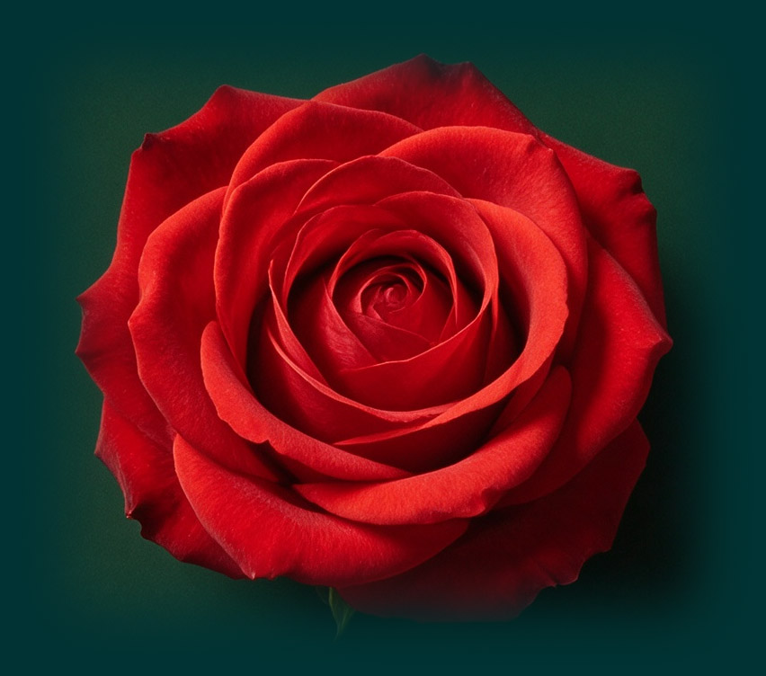
- 别名：月季、蔷薇。
- 特征：带刺灌木，花色极其丰富，花型饱满，香气浓郁。
- 花语：爱情与浪漫，是表达爱意的经典之花。不同颜色寓意不同，红玫瑰象征热恋，白玫瑰代表纯洁，粉玫瑰则表示初恋或感动。
- 2. 百合 (Lily)
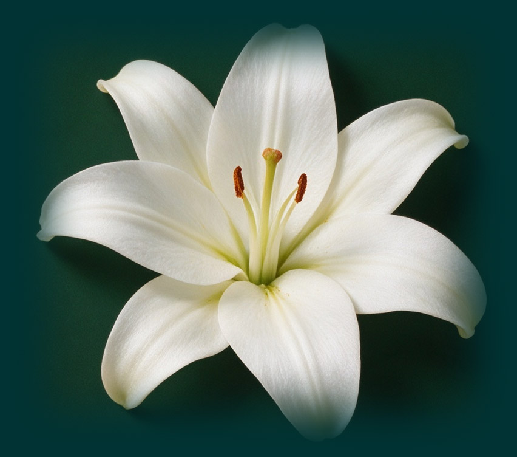
- 别名：百合花、香水百合。
- 特征：花姿雅致，花瓣通常为白色或粉红色，有浓烈香气。
- 花语：纯洁与祝福，寓意“百年好合”，非常适合送给亲友或用于婚礼。白百合象征庄严与心心相印，香水百合则代表高贵和伟大的爱。
- 3. 康乃馨 (Carnation)
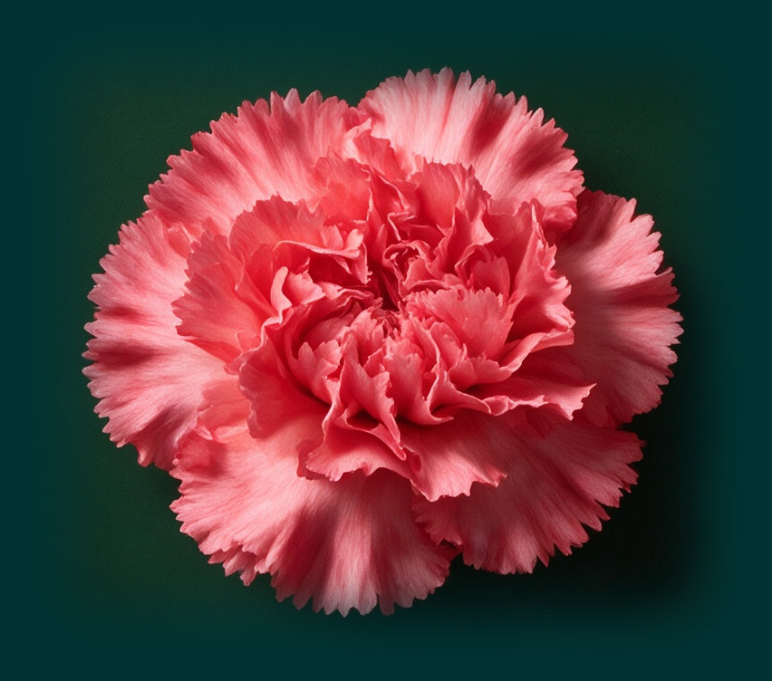
- 别名：香石竹、母亲花。
- 特征：花色多样（红、粉、白、黄等），花瓣边缘呈锯齿状。
- 花语：母爱与真情。红色康乃馨象征“相信你的爱”，是母亲节最具有代表性的花卉。
- 4. 菊花 (Chrysanthemum)
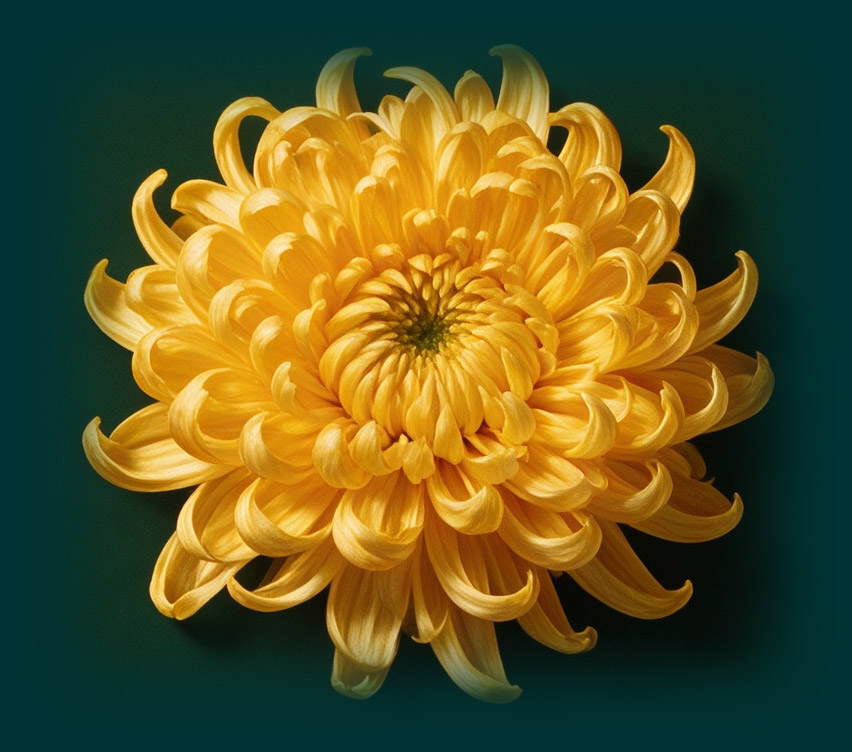
- 别名：寿客、金英、黄华。
- 特征：中国十大名花之一，花型繁多，花色丰富，凌霜而开。
- 花语：高洁与隐逸。因其在深秋开放，象征清寒傲雪的品格。在中国文化中，也代表清净、长寿与真情。
- 5. 向日葵 (Sunflower)
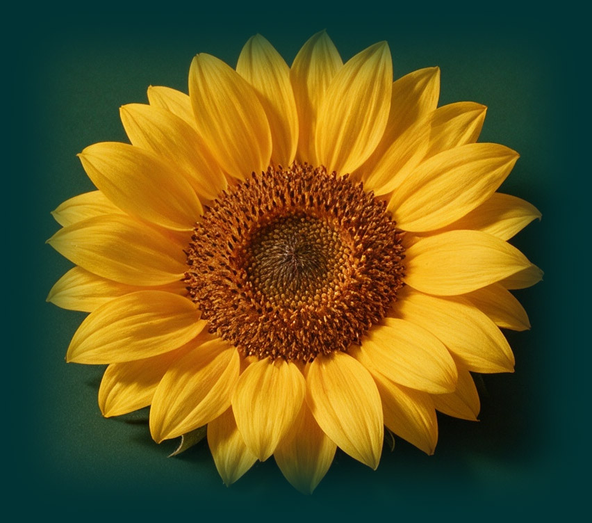
- 别名：朝阳花、转日莲。
- 特征：花盘硕大，舌状花为明亮的金黄色，花序随太阳转动。
- 花语：光辉与忠诚，也象征着仰慕和沉默的爱。它总是面向太阳，给人带来希望和正能量。
- 6. 郁金香 (Tulip)
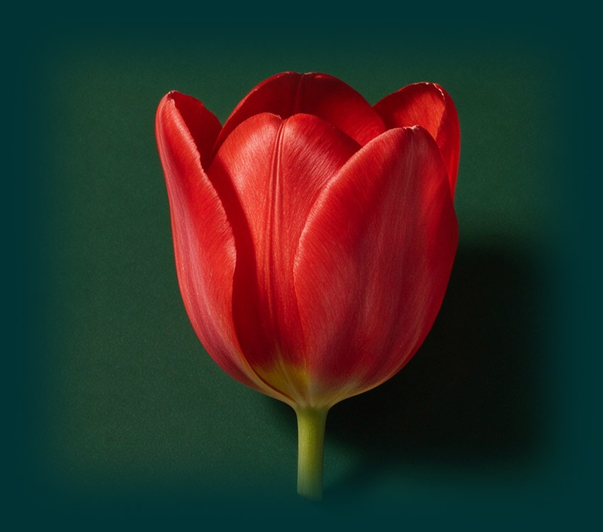
- 别名：洋荷花、草麝香。
- 特征：花单朵顶生，大型而艳丽，花型优雅如高脚杯。
- 花语：爱的表白与荣誉。红色代表“爱的宣言”，紫色象征“无尽的爱”，而粉色则意味着“幸福”与“永恒”。
- 7. 水仙花 (Narcissus)
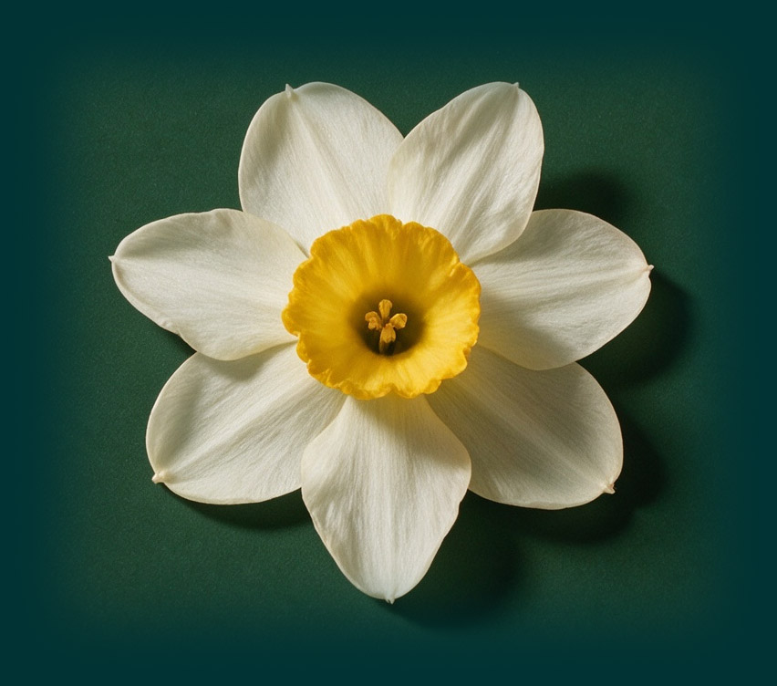
- 别名：凌波仙子、玉玲珑、金盏银台。
- 特征：鳞茎卵圆形，叶翠绿，花被片白色，副冠黄色，有清香。
- 花语：自爱与高尚。花语源于希腊神话中美少年纳喀索斯的故事。在中国，水仙也象征“多情”、“想念”与新的开始。
- 8. 牡丹 (Peony)
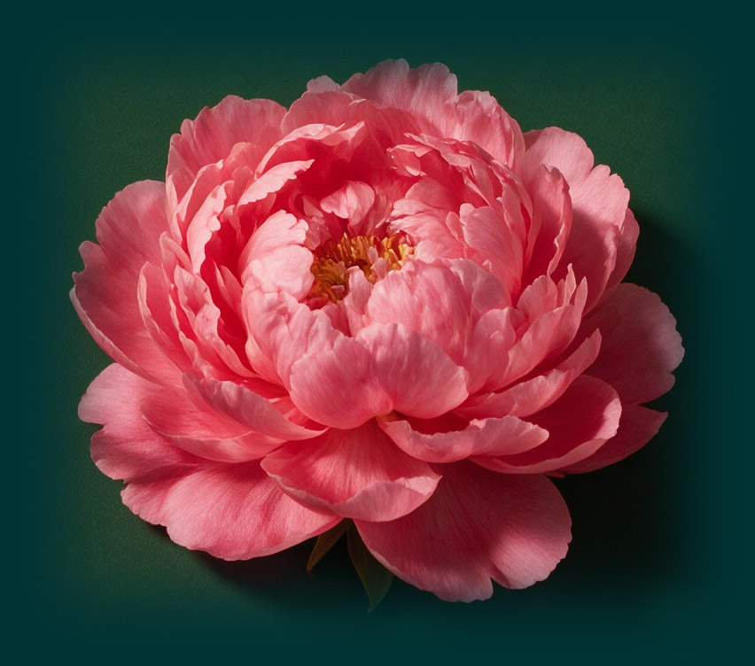
- 别名：木芍药、花王、洛阳花。
- 特征：花大色艳，雍容华贵，有“国色天香”之称，是中国特有的名贵花卉。
- 花语：圆满与富贵。在中国传统文化中，是繁荣、幸福和吉祥的象征。
- 9. 梅花 (Plum Blossom)
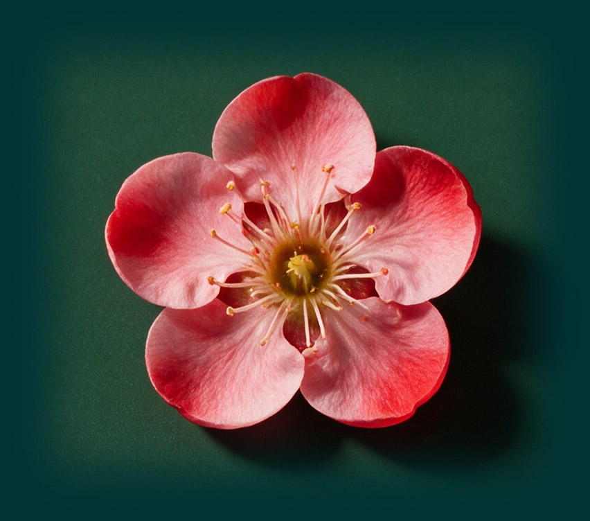
- 别名：春梅、干枝梅。
- 特征：中国十大名花之首，与松、竹并称“岁寒三友”，在严寒中开放。
- 花语：高洁与坚贞。象征坚强、谦虚和不屈不挠的品格，激励人们奋发立志。
- 10. 雏菊 (Daisy)
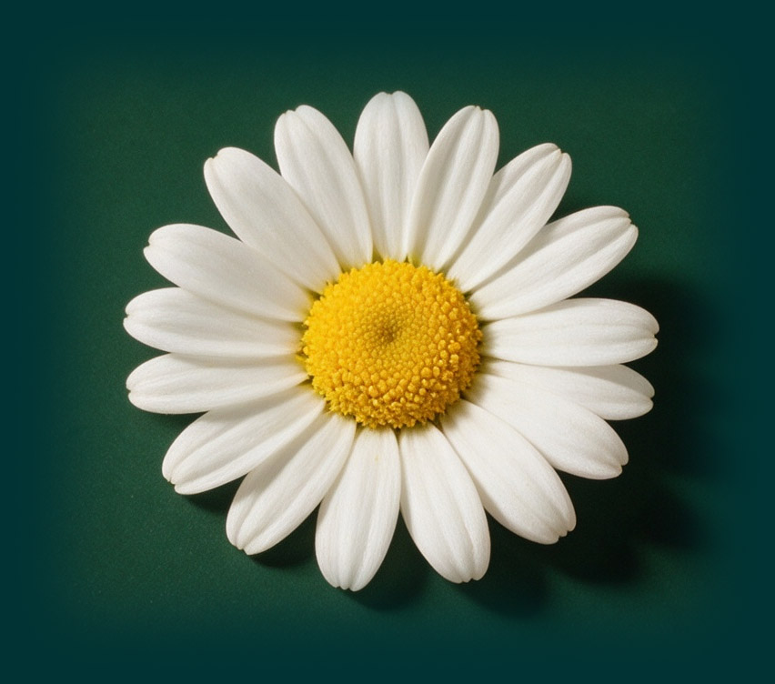
- 别名：马头兰花、太阳菊、延命菊。
- 特征：花朵小巧，早春开花，生气盎然。
- 花语：天真与暗恋，也代表快乐和离别。在西方，人们常用雏菊花瓣占卜爱情。白色雏菊也象征纯洁与和平。
- 11. 紫罗兰 (Stock/Violet)
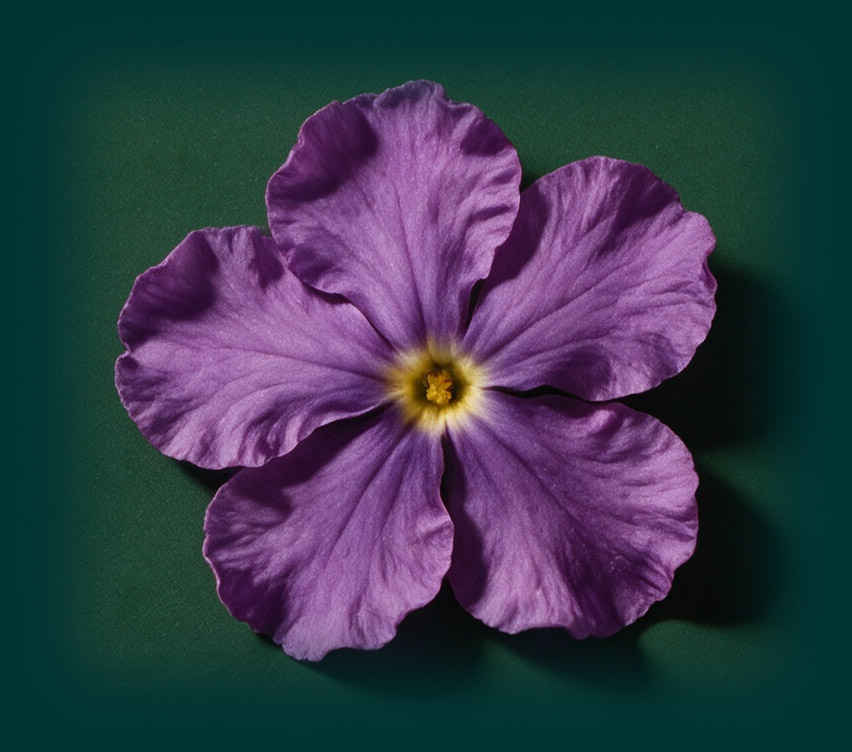
- 别名：草桂花、四桃克。
- 特征：花瓣多皱，花色丰富（紫、白、粉等），有浓郁香气。
- 花语：永恒的美与爱，也代表质朴和美德。白色的紫罗兰寓意“洁白无瑕的爱”。
- 12. 莲花 (Lotus)
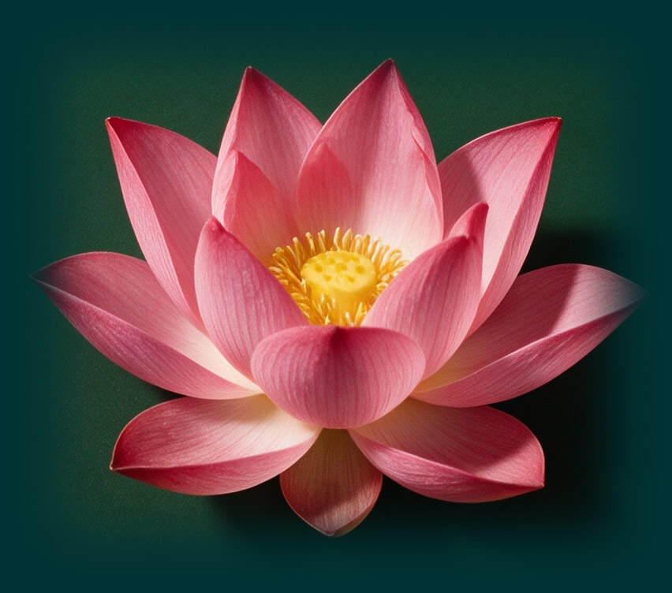
- 别名：荷花、水芙蓉、菡萏。
- 特征：水生植物，“出淤泥而不染”，花大而美，有粉、白等色。
- 花语：高洁与坚贞。象征清白、纯洁和不受世俗污染的品格，在佛教中具有神圣地位。
- 13. 满天星 (Baby's Breath)
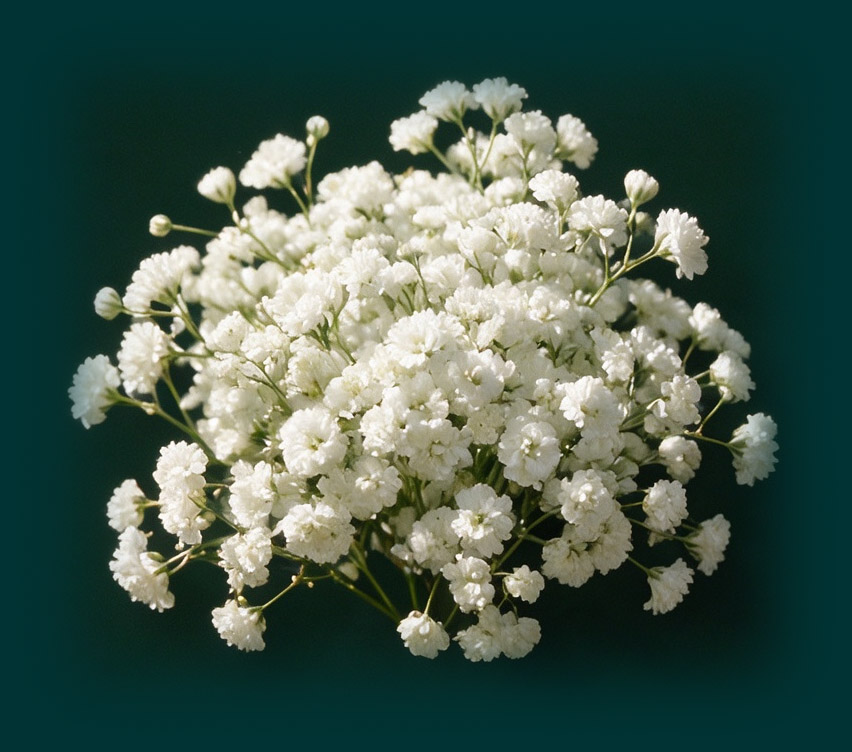
- 别名：霞草、锥花丝石竹。
- 特征：花朵细小而繁多，呈伞房状聚伞花序，常作为配花。
- 花语：纯洁的心。在花艺中多用于衬托主花，象征着配角般的爱和清纯、关怀。
- 14. 薰衣草 (Lavender)
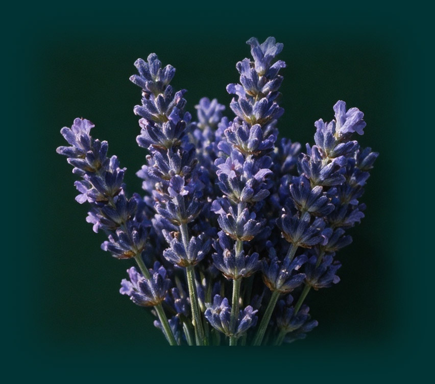
- 别名：香草、黄薄荷。
- 特征：小灌木，叶形优美，花穗呈蓝紫色，全株有浓烈香气。
- 花语：浪漫的爱。其优雅的香味和颜色常被与等待爱情、浪漫和承诺联系在一起。
- 15. 迎春花 (Winter Jasmine)
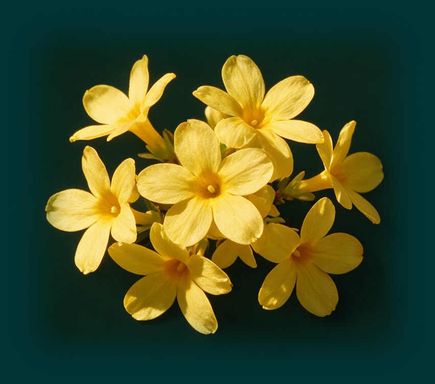
- 别名：黄素馨、金腰带。
- 特征：小枝细长拱形下垂，花冠金黄色，在早春百花之中开花最早。
- 花语：希望与活力。它的开放预示着春天的到来，象征着新的开始和美好的期待。
- 16. 海棠花 (Chinese Flowering Crabapple)
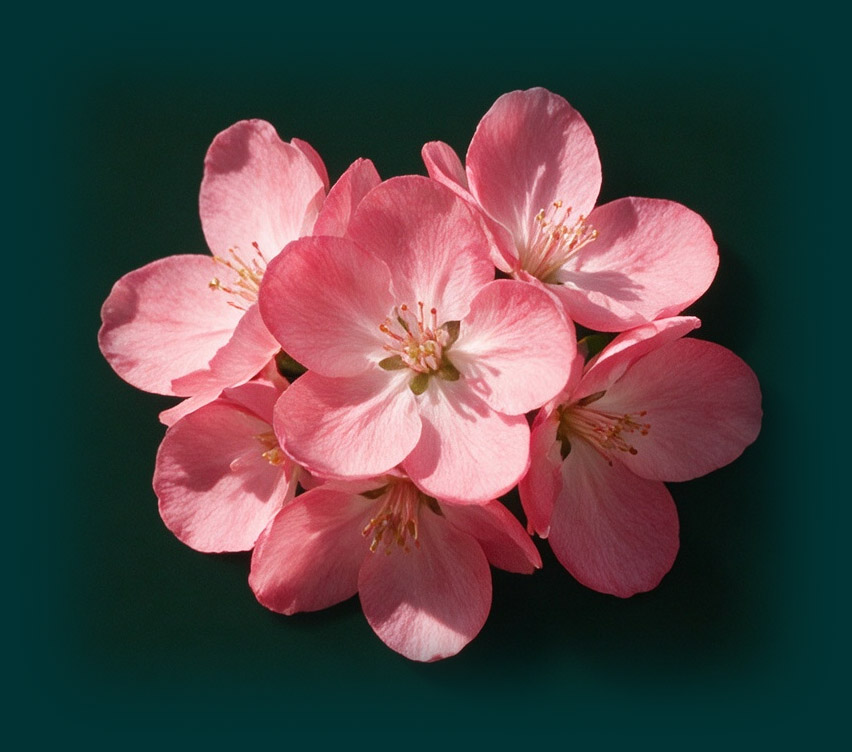
- 别名：解语花、断肠花。
- 特征：花姿潇洒，花开似锦，是雅俗共赏的名花。
- 花语：美丽与离愁。在古代常被用来表达游子对故乡的思念和男女离别时的悲伤。也象征着苦恋和快乐。
- 17. 三色堇 (Pansy)
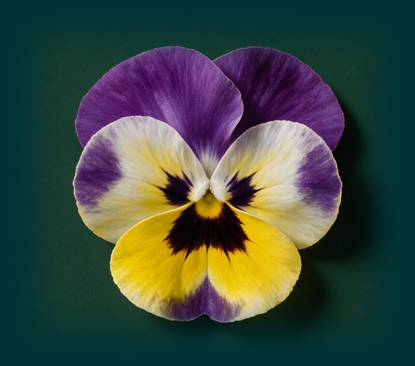
- 别名：蝴蝶花、人面花、鬼脸花。
- 特征：花瓣上有明显的深色“眼斑”，形状如蝴蝶，色彩常为黄、紫、白三色。
- 花语：沉思与思念。花语是“请想念我”。在莎士比亚的《仲夏夜之梦》中，它的花汁被用作爱情的迷药。
- 18. 丁香花 (Lilac)
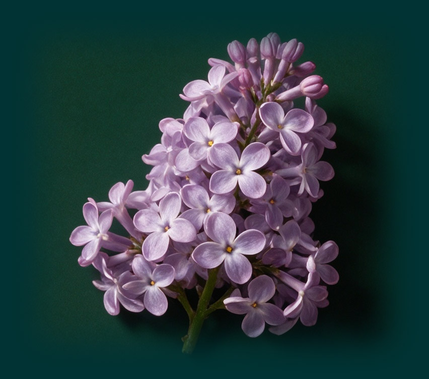
- 别名：百结、丁子香。
- 特征：花序硕大繁茂，花色淡雅（紫、白等），香气浓郁。
- 花语：光辉与初识的羞怯。因其高贵的香气，被誉为“天国之花”。紫色的丁香花也常让人联想到初恋。
- 19. 昙花 (Epiphyllum)
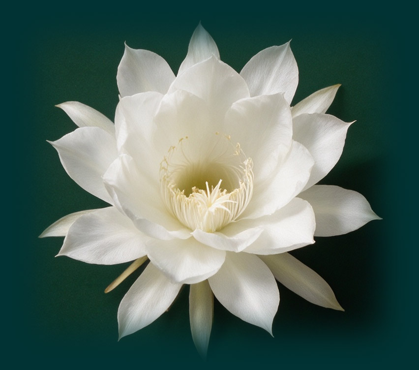
- 别名：月下美人、韦陀花。
- 特征：附生肉质灌木，花大而洁白，通常在夜间开放，且时间极短。
- 花语：刹那间的美丽与永恒的回忆。也象征着“月下美人”和“虚幻的美丽”，代表稍纵即逝的美好时光。
- 20. 杜鹃花 (Azalea)
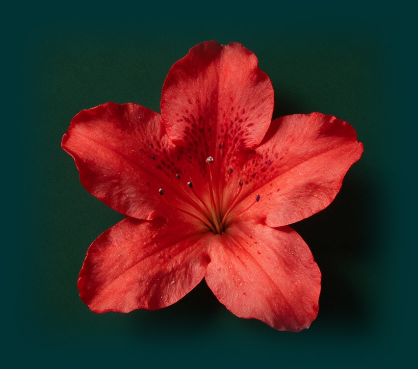
- 别名：映山红、山石榴。
- 特征：灌木，花冠漏斗形，花色繁茂艳丽，有红、粉、白等多种颜色。
- 花语：节制与喜悦。红色的杜鹃花代表“爱的喜悦”，而白色的则象征“被爱的喜悦”。在中国文化中也寓意“鸿运当头”。